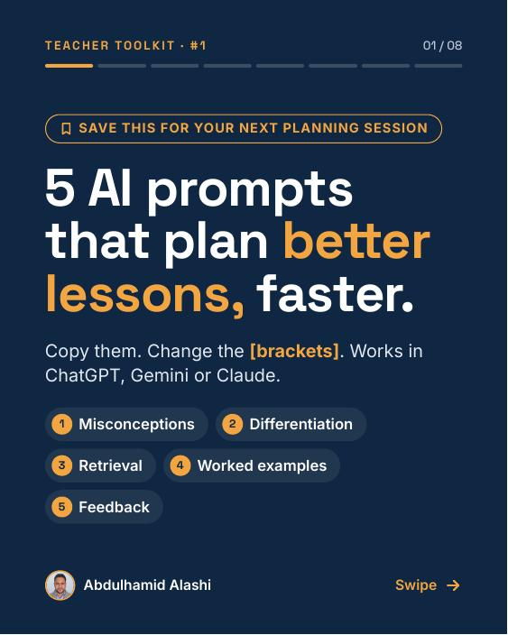
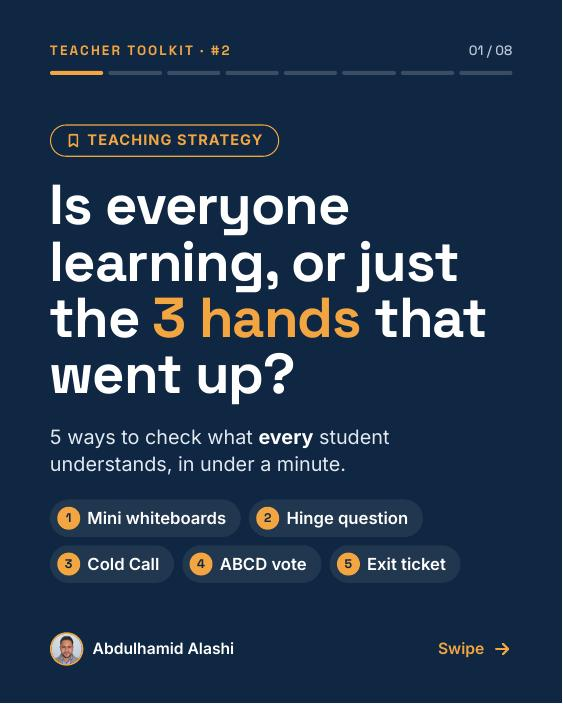

AI for teachers
Use AI safely to plan, differentiate and give feedback, with checks that keep you in control.
- 5 AI prompts for planning (Toolkit #1)
- Coming: AI prompt library by subject
Practical, research-informed strategies and simple classroom tools for teachers of any subject, from AI to assessment to behaviour. Built by a teacher, for teachers.
Chosen from international teacher surveys, not guesswork. Each area grows week by week with guides and tools you can use in any subject.
Use AI safely to plan, differentiate and give feedback, with checks that keep you in control.
See what every student knows, not just the few with hands up, and act on it in the lesson.
Calm, consistent routines that cut low-level disruption, the challenge teachers report most.
Simple adaptations so students with additional needs can access the same learning.
Save hours on planning, marking and admin without lowering quality.
Why these five? International teacher surveys repeatedly name AI skills and teaching students with special educational needs among teachers' top professional-learning needs (OECD TALIS 2024). Most teachers report no formal guidance on using AI (Gallup), low-level disruption is the most common behaviour challenge, and workload is the top wellbeing concern (Tes).
Short, research-informed guides you can save, share and use in your next lesson, in any subject. Download each one as a PDF.

Misconceptions, differentiation, retrieval, worked examples and feedback, plus 3 checks before anything reaches a class.
Download PDF
Mini whiteboards, hinge questions, Cold Call, ABCD votes and exit tickets, each with how, why and what to watch out for.
Download PDFSimple tools for any subject that run in your browser. No sign-up, and nothing you type is uploaded.
Ask the whole class, give 3–5 seconds of thinking time, then pick a name fairly. Nobody is picked twice until everyone has had a turn.
Open the toolSort answers into got it / nearly / not yet in seconds, and plan tomorrow's starter from the gaps.
Ready-to-copy prompts for planning, differentiation and feedback, sorted by subject and age.
Tell me the challenge you face in your classroom. The most requested topics become the next guides and tools.
Teacher and former Head of Science, based in Abu Dhabi, UAE. I turn research and AI into practical tools that save teachers time and help every student learn, whatever the subject.